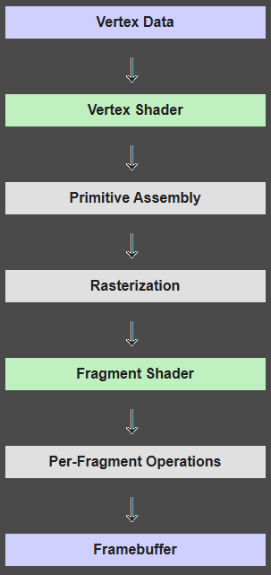

Theory
OpenGL
OpenGL needs us to provide it with some information for it on how to render stuff for us to a framebuffer. It needs 3 main things which are the vertices and additional data on what to render (a buffer object), a place that knows what buffers we are going to use and how (a vertex array object), and some code on how to process that data into an image (a shader program)
Buffers
Buffers are a place to store things on the GPU. CPU and GPU do not share the same memory (CPU RAM vs GPU VRAM). With buffers we can set and update the GPU memory which we then use to render things to our screen. We can freely send and receive data between the CPU and GPU but the process is very slow. Because of that we should limit the amount of reading/writing between the CPU and GPU as much as possible
The GPU can have multiple parts of VRAM optimized for different tasks. Most common example is the static, dynamic and stream memory. Static is optimized for rare or one-time writes where as dynamic is optimized for a lot of writes/reads in a short amount of time. The stream memory is not as common but it serves us in case we are planning to do a rare or one-time write and the GPU will use the passed data just a few times before being deleted
We can bind the buffer to multiple types of targets. These are
- GL_ARRAY_BUFFER - Used to store vertex attributes like positions, normals,…
- GL_ELEMENT_ARRAY_BUFFER - Holds indices that reference vertex data (this will be used and explained later on)
- GL_SHADER_STORAGE_BUFFER - A large general-purpose buffer for shaders
- GL_UNIFORM_BUFFER - Holds uniform data (constants) that can be shared across multiple shaders and draw calls
- GL_COPY_READ_BUFFER - When copying data between shaders used as source
- GL_COPY_WRITE_BUFFER - When copying data between shaders used as destination
Binding
When working with buffers (and other OpenGL objects like textures etc.) we usually bind them before working with them. The workflow looks like this
// GLuint bufferID = ...;
glBindBuffer(GL_ARRAY_BUFFER, bufferID);This will “bind” the buffer represented by bufferID to GL_ARRAY_BUFFER. This means that from now on anytime we reference GL_ARRAY_BUFFER we are going to be referencing the buffer represented by bufferID
glBufferData(GL_ARRAY_BUFFER, ..., ..., ...);Now we are doing some operation with a buffer. Rather than passing bufferID anywhere we are instead telling OpenGL that the buffer we want to work with is bound to GL_ARRAY_BUFFER
After we are done with the buffer we should (but don’t have to) unbind it
glBindBuffer(GL_ARRAY_BUFFER, 0);This can be done by binding a 0 to that specific buffer. Now any operation with GL_ARRAY_BUFFER will fail and give an error instead of the alternative of changing our buffer somewhere where we don’t want to. If we do not unbind our buffers it can be very difficult to debug where and why is our buffer changing as it can be in a part of code which has nothing to do with our buffer
Shaders
Shaders are an OpenGL object that holds our GLSL code. Our code starts as a text string that then gets compiled into several shaders based on their purpose and then connects them as a shader program
A shader program is a collection of shaders that defines the “pipeline” on how to work and process input data to pixels on the screen or for a frame buffer
OpenGL has two main shaders types, the vertex shader and the fragment shader. Vertex shader tells us where are we going to be rendering on the screen where as the fragment shader fills a defined region from the vertex shader with color
There are more shader types such as
- Geometry shader - Can create or discard geometry on the GPU. You can picture it as instead of passing whole triangle vertices to the GPU we just send it individual points where we want our triangles placed and it generates them for us
- Tesselation control shader - Subdivides geometry
- Tesselation evaluation shader - Decides the position of vertices after tesselation
- Compute shader - Is not used for rendering but can be used to compute anything with the power of the GPU
Geometry and tesselation shaders are part of the primitive assembly process
These additional shader types are too complicated and not needed for a simple project so we will not be going though them. Any shader type that is worth mentioning is the geometry shader as it is not that hard to use and can prove itself very useful
Vertex Shader
Vertex shader is at the start of our shader chain and takes in our input data vertices. If we do not want to move them in any way we can just pass them directly to the output but if we have a camera or we want to be able to change the objects position/rotation/scale we can do this during this step
Fragment Shader
Before this shader we can put a tesselation and/or geometry shaders that modify our vertex shader output. This can be done for example to increase the level of detail or to automatically generate/modify new geometry on the GPU
Right before running the fragment shader a process called rasterization happens. Rasterization is a process that “selects” all the pixels that are inside the area designated by vertices. The fragment shader then runs for every pixel inside the rasterization zone
Fragment shader colors in the object. If we don’t need any special color effects we can just pass a color straight without any modifications but later on we will want to modify the color either with lights, a settable uniform variable etc.
Shader program
Shader program is the pipeline of shaders used to generate an image. It takes in data from buffer(s) with the help of a vertex array object, processes it and the output is put onto our framebuffer/window

Image source from WikiBooks.orgRendering
To render our first triangle we must create an array of vertices representing our shape. A simple triangle may look like the following
float triangleVertices[] = [
// X , Y , Z
-0.5f, -0.5f, 0.0f,
0.5f, -0.5f, 0.0f,
0.0f, 0.5f, 0.0f
]Vertex Array Buffer
Vertex Array Buffer (VBO) will help us send our vertices over to the GPU memory. Generating our buffer is simple
GLuint VBO;
glGenBuffers(1, &VBO);To start using our buffer we need to bind it to the correct buffer slot
glBindBuffer(GL_ARRAY_BUFFER, VBO);GL_ARRAY_BUFFER represents the slot our buffer will be slotted in. Some of the other buffer types are GL_ELEMENT_ARRAY_BUFFER, GL_ELEMENT_ARRAY_BUFFER, GL_UNIFORM_BUFFER
Now we need to send our CPU data triangleVertices to the GPU buffer VBO
glBufferData(GL_ARRAY_BUFFER, sizeof(triangleVertices), triangleVertices, GL_STATIC_DRAW);GL_STATIC_DRAW has alternatives like GL_DYNAMIC_DRAW and GL_STREAM_DRAW. This will prefer to place our buffer in memory thats optimized for our amount of access
- GL_STATIC_DRAW means we will be rarely or never sending any more data to the GPU buffer
- GL_DYNAMIC_DRAW means we will be updating our data quite often
- GL_STREAM_DRAW means we will rarely or never send any more data to the GPU buffer and our GPU will use our buffer just a few times
The arguments passed to glBufferData(..) basically mean we will be working with an array buffer and we will send sizeof(triangleVertices) amount of data that starts at triangleVertices and we won’t be sending more data to the buffer anymore as it is static draw
Now our GPU knows about our triangle’s location. All we need to do now is to set up our shaders and render it
Shaders
Shaders allow us to use our vertex array buffer in order to render something to the viewport. We need to define two shaders, A vertex and fragment shader. We can use more shaders like the geometry shader between them but we do not have to do that for now
A shader is written using the GLSL programming language
Vertex shader
#version 330 core
layout (location = 0) in vec3 vertexPos;
void main()
{
gl_Position = vec4(vertexPos.x, vertexPos.y, vertexPos.z, 1.0);
}In the following example we are creating a shader for the OpenGL version 3.3. Then we are declaring that we will be binding our buffer with vertices as the first input (we will be getting into how this exactly works later). The main function then runs for all vertices provided where it just sets the position of our vertex to the one provided
Fragment shader
#version 330 core
out vec4 FragColor;
void main()
{
FragColor = vec4(1.0f, 0.5f, 0.2f, 1.0f);
} A fragment shader does not interact with the bound buffers directly. It takes in variables passed from the vertex shader and runs the main function for each pixel that was included during rasterization
It outputs FragColor as an RGBA value in the range (0.0, 1.0) which will be written into our frame buffer. We can rename the FragColor to anything we want we just need to make it the first variable that goes out. The depth buffer is calculated automatically so we do not need to worry about it
If the fragment shaders finds that the pixel is further away than the pixel that was in the depth buffer it is skipped
Compiling
Now that we have our shaders we need to get them into our C/C++ program. To do that we can either write and store it directly in our code like
const char* vertexShaderSource = "...";or load it from a file using std::ifstream or similar
or any other way to get it into the const char* or std::string in our program memory
Now that the shader is stored in a variable in program memory we can start the compilation process
To compile the shaders we first need to make an OpenGL object that hold the compiled shader
// Already loaded GLSL code
// const char* vertexShaderSource = "...";
// const char* fragmentShaderSource = "...";
GLuint myVertexShader;
myShader = glCreateShader(GL_VERTEX_SHADER);
glShaderSource(myVertexShader, 1, &vertexShaderSource, nullptr);
glCompileShader(myVertexShader);
GLuint myFragmentShader;
myShader = glCreateShader(GL_FRAGMENT_SHADER);
glShaderSource(myVertexShader, 1, &vertexShaderSource, nullptr);
glCompileShader(myVertexShader);After compiling each of our shaders we may want to look for any compilation errors. There is an OpenGL function called glGetShaderiv(...) exactly for this purpose
// myShader will be for myVertexShader and myFragmentShader in this example
constexpr unsigned int MAX_MSG_ERROR_LEN = 512;
GLint compilationSuccessful;
glGetShaderiv(myShader, GL_COMPILE_STATUS, &success);
if(!success){
char errorMessage[MAX_MSG_ERROR_LEN];
glGetShaderInfoLog(myShader, MAX_MSG_ERROR_LEN, NULL, errorMessage);
std::cout << "OpenGL Compilation error: " << errorMessage << std::endl;
}After compiling both (or more) shaders we need to create a shader program. Shader program combines the shaders together and allows us to use them
GLuint shaderProgram;
shaderProgram = glCreateProgram();After creating the shader program we need to link the vertex and fragment shader to it
glAttachShader(shaderProgram, myVertexShader);
glAttachShader(shaderProgram, myFragmentShader);
glLinkProgram(shaderProgram);
// We can again check for any errors during linking with
// glGetShaderiv(shaderProgram, GL_LINK_STATUS, &success);
// the rest is the sameNow after linking the shaders to a shader program, we do not need the shaders anymore. To free up some space and prevent memory leaks we should delete them with
glDeleteShader(myVertexShader);
glDeleteShader(myFragmentShader); Putting it all together
Right now we have the buffer and shader program ready. The last step is telling OpenGL how the buffer should interact with the shader program
Telling our buffer how to put data to our shader
To store the information on how to use our buffer we need to create a Vertex array object. It is possible with
unsigned int VAO;
glGenVertexArrays(1, &VAO); To setup the VAO we do
// We are now saying our VAO how to bind our buffer and its attributes
glBindVertexArray(VAO);
// Our VAO is using VBO array buffer
glBindBuffer(GL_ARRAY_BUFFER, VBO);
glVertexAttribPointer(0, 3, GL_FLOAT, GL_FALSE, 3 * sizeof(float), (void*)0);
glEnableVertexAttribArray(0);Now lets talk about what the specific arguments mean
In the first macro the following arguments are
- Vertex attribute we are modifying (it is the (location = 0) from our vertex shader)
- The size of our attribute. We are using Vec3 for the position of a vertex which is composed from 3 floats
- What data type is the attribute. A Vec3 is made from 3 floats so we use
GL_FLOAT - If we want our data to be normalized (meaning transformed into (0; 1) or (-1; 1)). We do not want that for our position data so we set it to
GL_FALSE - Defines the stride. Stride means how many bytes we want to skip for the next position data. We want to skip 3 floats (one Vec3 argument) to get the new one
- Defines the offset as a
void*argument. The vertex data starts right at the start of our buffer so we are not setting any offset (thus (void*)0)
The glEnableVertexAttribArray tells OpenGL that we will need (layout = 0) enabled and to make it accessible
Putting a triangle on the screen
We have a shader program and VAO. These are the two primitives needed for rendering
Shader program says how are we going to render the object
VAO tells us how the vertices are stored, where they are stored and how to send it to the shader program
glUseProgram(shaderProgram);
glBindVertexArray(VAO);
glDrawArrays(GL_TRIANGLES, 0, 3);glDrawArrays tells OpenGL to use the currently bound VAO and shader program to draw on the currently bound frame buffer (default is our window). We are telling OpenGL to draw a triangle that should start from the beginning (0) and read 3 Vec3 values (3)
Running the code above in the rendering loop will show us a triangle on the screen. Your screen should look like the rendered element below